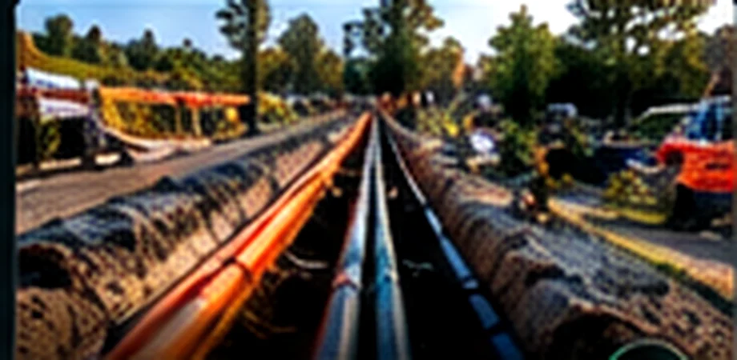
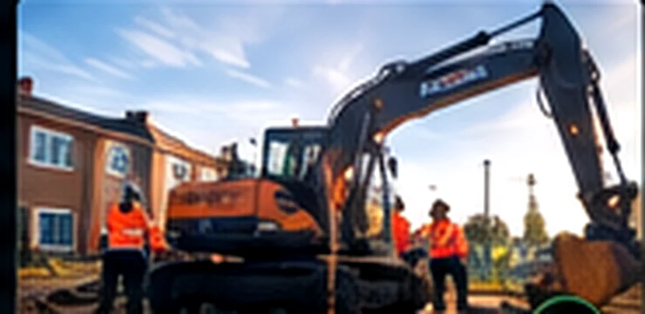
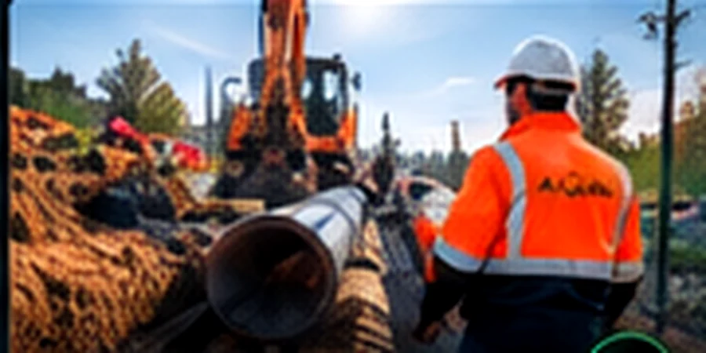

FEATURED WORK
Our work. In the field.
A selection of projects and activities featured on Acord’s existing website.

Glaspoort Nieuwkoop FTTH
Fibre infrastructure in Nieuwkoop, featured on Acord’s existing website.
View project ↗
Glaspoort Hoeksche Waard FTTH
Fibre-related activities in Hoeksche Waard, featured on Acord’s existing website.
View project ↗
Waddinxveen FTTH
Fibre activities in Waddinxveen, featured on Acord’s existing website.
View project ↗Planning an infrastructure project?
We are happy to help you explore the right approach.